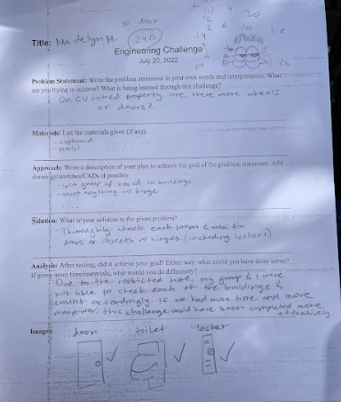
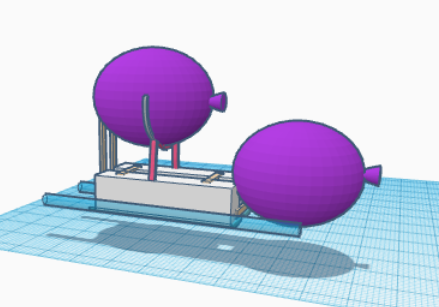

Maddie's Website

8/21-8/24 Week 1
This is my first journal entry. We learned about the engineering process and safety rules. Along with figuring out how to create a website and edit it to our liking.
I have the ability to do this using AWS, GITHUB, and html code. These are all fundamental aspects that allows me to create and edit the text that will be displayed to the website.
These websites will allow me to document all the activities and lessons I have learned in this class.
8/28-8/31 Week 2
This is my second journal entry. This week we were introduced Rude Goldberg machins and tinker cad which is a 3D modeling program. I learned about the
machines that were used back in the day to advance the quality of life. Such as a lever, pulley system, wedge, incline,wheel,and screw. With these simple
mechanics, my table group and I were asked to create a system that pops a balloon, all while having limited supplies. We rough drafted a simple design but
over the week edited it to make it the best it could be.Then we modeled this in tinker cad. Another assignment incorporated with Tinker Cad was
to create a home appliance. I chose to make an open fridge, displaying its containments. Unfortunately, I did not have enough time
to fill it with food like I intended to. We also took an engineering design quiz and worked on our Goldrudeberg machine model in Tinker Cad.

9/5-9/8 Week 3
This is my third journal entry. Prior to last week, we finalized our rude goldberg machine on tinker cad and started manufacturing it with limited materials.
My tablemate, Emma, was in charge of handling our supplies. We started with a large piece of cardboard and drew precise lines to help us cut the same measurements of our tinkercad model.
Cherin, my other tablemate, used a box cutter to cut out the pieces we needed for the incline and railing. At first, while Cherin was cutting, Emma and I just watched
on the side, not doing anything else. In order to speed up production, we decided to all focus on different parts of our machine. This week we weren't able to
start connecting things together but we were able to start cutting some cardboard pieces.

9/11/-9/15 Week 4
This is my fourth journal entry. This week we worked on our rude goldberg machine using carboard and other materials. During the whole
tuesday period all we did was cut and contruct our design. Unfortunately, we were not able to add a pulley machine due to the lack of time.
The next period we had was another working period on our machine.Our first time testing it with a balloon was unsuccessful. The problem was
the baseball wouldn't fall into the cardboard car box.To fix it we adjusted the position of the lever. Once this problem was solved, another error occured.
Even when the ball fell in the car, there was not enough force to push the needle into the ballon. After many adjustements and tinkering,it finally popped.
I think this is because we adjusted the two cars taped to the bottom of the car box. This allowed it to gain more speed and resist friction, thus
creating enough force to pop the balloon. Mission Success.
9/18/-9/21 Week 5
This is my fifth journal entry. This week I took part in a challenge with the goal of creating a paper flotation device that holds weights. In order
to win, your device had to hold the most amount of weight compared to the class for five mnutes. We had limited time so I had to act fast. I cut my paper
into a square so I can make an evenly shaped box. With my extra paper, I folded them and created two hollow cylinders. These were to give the box extra support
when floating. I put 106 grams of weight in my box and it was able to stay afloat for 5 times.
9/24/-9/28 Week 6
This is my sixth journal entry. This week I took apart a PC with my groupmates. And once we correctly dismantled all the parts, we then
put it back together. During this process I learned about the location and functions of the necessary parts of a PC. Such as the motherboard, CPU,
RAM, heat sink, GPU, etc. After that we took a quiz about the intro to engineering and the main functions of a computer.
10/1/-10/4 Week 7
This is my seventh journal entry. This week I learned about how prosthetics are made and utilized to benefit individuals with disabilities. Such as
nerve sensored arms that react to the patients nerves in their arms. This allows the patient to control a functional arm. As an experiment,
we created a 3D model of a prosthetic for an animal of our choice. I chose a capybaras front leg.
10/14/-10/19 Week 8
This is my eight journal entry. This week learned about aerospace engineering.From the new knowledge I gained, I then designed a rocket prototype on tinker cad.
The purpose of this is to create a model that will hopefully fly a good distance once it is made in real life. I decided to make it more like a place
since planes fly forward, compared to rockets which fly up. I made it very simple. A wing on each side of the base, a pointy cone tip on the front, and a little shark fin
at the top to give it more direction.
10/14/-10/19 Week 9
This is my ninth journal entry. This week I created a rocket prototype out of a bottle and cardboard. Then using a water pressure device, it shot the protoype across
a field. Unfortunately, our design did not travel very far. It had a pressure of 60 and a about 3/4 cup of water in the bottle. I think the reason it did not travel
far is because there was not enough water to weigh it down, which is why it spiraled backwards instead of traveling forward. If I could do it again then I would add much more water
and even increase the pressure by a little.
10/21/-10/25 Week 10
This is my tenth journal entry. This week my partner and I created a water filtration system. We did this by utilizing a water bottle,cotton
balls, rocks, pebbles and sand in order to filter dirty water into clean drinkable water. The way we ordered our supplies was the big rocks on
the very top, then the pebbles, then the sand, and finally the cotton balls on the bottom. We placed the cotton balls at the bottom in order for it to hold all
the rocks and pebbles from falling into the water. And the big rocks were on top to filter any big solid objects. Then from there, the materials only
got finer and finer. The reason for this is to filter the water for smaller particles as it travels farther down the system. After running the dirty water through the materials about 4 times,
our water result was yellow with no solid particles. So, our system successfully removed any solid objects or particles from the original black water,
and turned it into gray water. Although even after filtering it, I still wouldn't advise it to be ingested or used.
10/30/-11/03 Week 11
This is my eleventh journal entry. This week learned about electrical engineering and how to manipulate circuits components to make a light glow. More specifically, I learned about
current, resistors, diodes, and voltage. As well as how electricity flows in a circle. It comes out of the positive side and circles back into the negative side. This new information allowed me
to tinker an accurate electrical current that powers and LED.

11/07-11/11 Week 12
This is my twelvth journal entry. This week my partner and I worked on lab 3 and 4 and building circuits by a breadboard. In order to to this we had to utilize resistors
and LED's to manipulate circuits in parallel and in series. We used an Arduino board to code the program for the ciruit, however, it was not working for many studens.
Even if the code was right, the program would not activate the desired results. This caused a setback to the entire classroom. So unfortunately, my partner and I were unable
to complete lab 3 or even start lab 4 due to this error.
11/07-11/11 Week 13
This is my thirteenth journal entry. This week I learned about the many qualities of buisness engineering and watched a slideshow discussing it. I was introduced to the four fields of buisness.
We also started brainstorming a shark tank idea in our table groups. The class watched an old shark tank pitch that was introducing the product "scrub daddy"
and it showed us to how make a successfull pitch. Aswell as what we should be including in our presentation. At first we were discussing the idea
of producing trained butler monkeys, but that seems to unethical.

11/07-11/11 Week 14
This is my fourteenth journal entry. This week I had to complete and present a project with my table group. We had to create a successfull product that is functional and is something
that people would be willing to buy. It was based off shark tank so we needed to make a product that fuffills a persons daily problem. What my group and I came up with, is a wireless
measuring object. This product is meant for individuals in fields such as construction, carpentry, and tailoring. It is basically a device that utilizes sensors in order to record
the distance between them. It is an easier and more precise way to measure long and short ranges.

11/07-11/11 Week 15


1/10-1/15 Sem 2 Week 1
This is my first week back during semester two. Unfortunately, I was absent during the entirety of this week, so I missed the lessons and projects done in class.
However, after independently viewing the slides, I learned about chemical engineering. Chemical engineering is the branch of engineering that deals with chemical production
and manufacturing products through chemical processes. There are many different duties that chemical engineers have. This includes, ensuring compliance with health, safety, and environmental
regulations, conducting research, estimating production processes, and much more. Along with this, chemical engineering contains a wide range of fields. Such as metallurgy, material science, oil exploration,
nuclear reprocessing, etc.

1/17-1/21 Sem 2 Week 2
This is my second journal entry for semester 2. This week my partner and I worked on completing our project proposal. The main purpose of this proposal is to
develop a mouse trap car that travels a far distance. The proposal was made up of many components. This includes the project description, project research,
design constraints, bill of materials, schedule of milestones, and the team member biographies. After watching a video about the factors that make up a good mouse trap car,
and further researching about this project, my partner and I were able to create an informative proposal.

1/24-1/29 Sem 2 Week 3
This is my third journal entry for semester 2. This week my partner and I focused on the calculations behind our design. After researching, we learned that the longer the rod, the more
energy it stores. However, based on the body size and weight, it is important to balance out the materials in order to achieve optimum results. Once we finished our calculations, we continued
to develop our model through tinker-cad. This software allows us to model how our design would look with accurate dimensions. Like a prototype.

1/24-1/29 Sem 2 Week 4
This is my fourth journal entry for semester 2. This week my partner and I worked on creating our prototype. We used cardboard as our base, cd's as our wheels, wooden rods as the axle, and straws and string.
In order for this model to be completely fnctional and the best it could be, then we had to make sure each of our pieces were the measurements we planned them to be. This biggest
challenge when creating this piece was gluing and sticking everything together. If the wheels were wobbly then the model wouldn't run well. For this reason, we had to attach and detach
the wheels multiple times in order for it to move stabely.

2/1-2/6 Sem 2 Week 5 & Week 6
This is my fifth and 6th journal entry for semester 2. To recap, this week my partner and I completed our prototype and tested our model. Our estimated guess for the distance traveled was
22 feet. However, our actual distance was only 20 feet. This means that our percent error was approximately ten percent. I think the reason our model traveled lower than
the estimated distance is because the wheels were crooked and caused the vehicle to swerve into a wall rather than travel straight. With this in mind, we used our mistakes made
on the prototype and are applying it to our finalized design.
1/24-1/29 Sem 2 Week 7
This is my seventh journal entry for semester 2. This week we completed the final test for our models. Unfortunately, our vehicle only traveled 37 ft, compared to when we tested it alone, it traveled
51 ft. This may be due to the flooring, since the floor where we tested it had more friction, compared to the hallways we tested it. If i had more time, I would probably strengthen our base more
and increase the rod size so it would travel a farther distance.

3/05-3/10 Sem 2 Week 8
This is my eight journal entry for semester 2. This week we worked on our eggdrop design model aswell as a wheels vs doors challenge. First, my partner and I researched multiple
designs that effectively keep an egg safe after dropping it from a great height. Once we found a design that looked successful, we added our own personal touches to further enhance it.
Next, the challenge we did this week was about wheels vs doors. We were all assigned a side, and had 10 minutes to count wheels or doors. Then, the two teams debated whether the school had more
doors or more wheels. This debate included the number of doors and wheels with reasonings behind them. Such as arguing that a toilet seat can count as a door, and how a door hinge can count
as a wheel. However, after a lengthy debate, my team, doors, won the challenge.

3/12-3/17 Sem 2 Week 9
This is my ninth journal entry for semester 2. This week my partner and I worked on our egg drop challenge device. We planned to design a model that protects the egg as
it falls down a three story building. In order to do so, we made a pyramid type shape out of cardboard and strategically taped straws around it. The straws will taked
the impact off the egg which provides more safety. And the pyramid will hold the egg, and will be filled with cotton balls in order to secure it. Lastly,
we added a parachute that is taped to each side of the pyramid. This will lessen the blow and provide air resistance to our model.
3/19-3/25 Sem 2 Week 10

3/26-4/01 Sem 2 Week 11
This week we started a new project called the gutter boat challenge. In this challenge, my partner and I need to create a device that can travel
500 cm using limited supplies. We are approaching this problem like making a regular boat on a river. Except tinier. I expect our idea to float but not have
the ability to travel 500 cm on its own. There were more restrictions than requirements during this challenge. Our requirements consisted of traveling 500 cm's and
being able to fit inside a 8 cm wide gutter. However, our restrictions were a bit lengthier. This included of very limited supplies.
Even tape. We could not go over the material limit, nor could it tip over. Having our materials restricted in mind, it made my partner and I very stingy with what we had
and we made sure to think before committing to any idea.

4/3-4/7 Sem 2 Week 12
This week my partner and I worked on our gutter boat model. We tried our best to manage our time and ration our tape in order to successfully complete our boat on time.
Our boat design was quite simple but took a lot of work. We had to make sure that our boat had no holes so there would be no leakage, and eventually lead to sinking. I was unfortunately
absent during the day of our testing, but according to my partner, our boat was unable to travel the full distance but did not tip over.
I think if we added another balloon engine then it could have made it to the end. If I had the chance to redo this project, I would definitely add another baloon. I learned that we needed to have
a source of energy that wouldn't run our. Such as a sail. Unfortunately I don't have a video of the testing but instead a couple of photos of our model.
4/8-4/13 Sem 2 Week 13
This week my partner and I completed a challenge and to design a carboat boat that can carry two people in a pool and travel back and forth without breaking. I reasearched and used
tinkercell to create a prototype model of what I envisions. I wanted to make a outrigger boat to ensure stability. Next, the main objective of the challenge is to create the longest possible bridge you can using only 15 post it notes.
Because we did not have any sort of gluing material besides the weak sticky ends of the post-its, my partner and I approached this as a weaving material. To ensure secured
pieces, we weaved together small long strips and connected them with the sticky part and weaving techniques. This ended up helping us in the testing becuase the bridge was able
to get very long and very secure. However, some parts were weaker than others and it broke in the middle during testing. We estimated a length of 230 inches but because I did not
account for the overlapped pieces, our final length reached only 200 inches. Ultimately, we were graded 8/10 points.